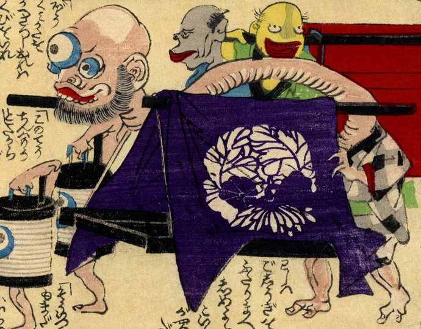

荷物を運ぶ化物たち。手前には首が長い三つ目の入道。棹を肩と首にかけて一人で運んでいる。奥では灰色と黄色の化物が、長櫃を運んでいる。
出典：親書誌：U426_nichibunken_0226：化物の嫁入；バケモノノヨメイリ／日付：2010／資源識別子：U426_nichibunken_0226_0017_0000
Copyright (c)2010- International Research Center for Japanese Studies, Kyoto, Japan. All rights reserved.